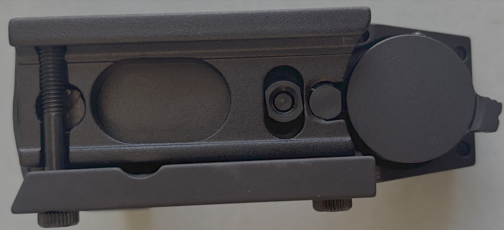
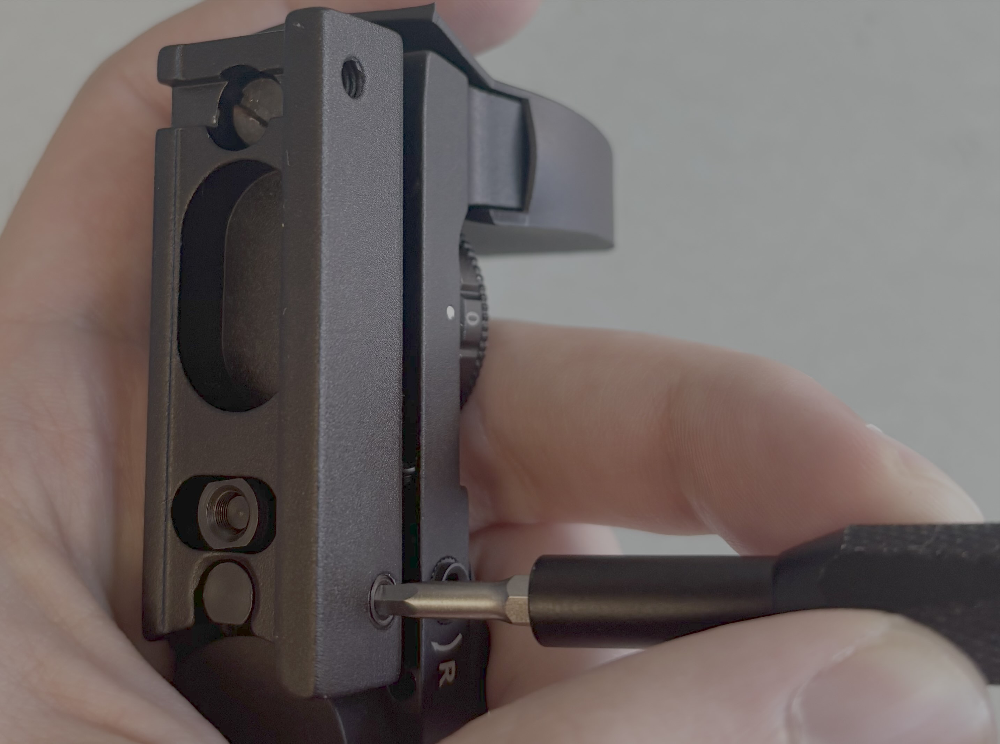
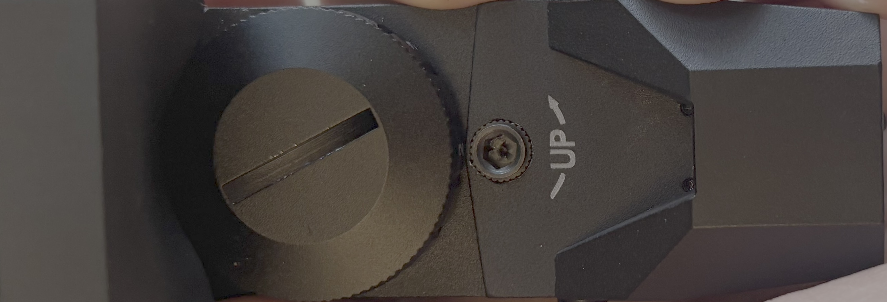
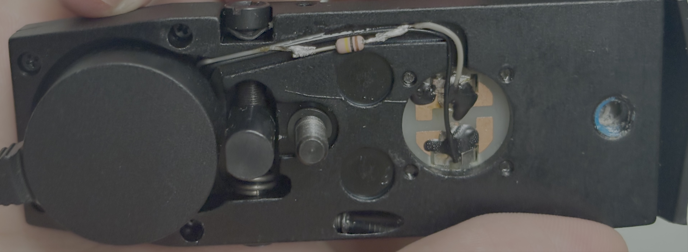
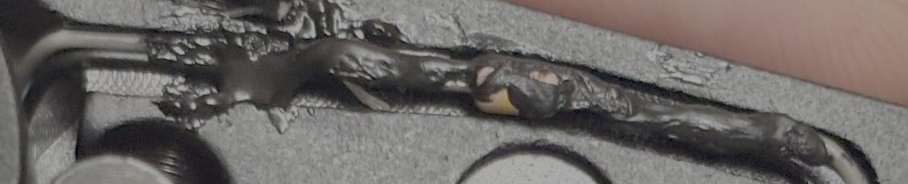

I bought the Stellarvue Multi-Reticle Finder (MRF) last year. Apparently it was originally designed as a sight for rifles but wasn't strong enough to maintain alignment between shots. This is no problem for amateur astronomy, in which you don't expect your telescope to experience large shocks. It makes for a high-quality and relatively compact red-dot finder. After all these years though, no one has bothered to change the LED to one suited for nighttime use even though it's marketed by Stellarvue as a telescope view finder.
Rather than returning the MRF, I figured I'd dim the LED myself by adding a resistor to restrict the current through it. The first step is to remove the dovetail screws with an M3 hex key.
After that comes the retainer for the left/right adjustment screw. Remove the set screw on the side with an M2 hex key and make sure not to lose the spring, metal plunger, and plastic bit which you will need to place back in that order later. Next, remove the retainer screw on the bottom with a flathead screwdriver.
Next, remove the up/down adjustment screw with an M3 hex key. This is the only thing holding in the nut on the bottom as well as the two springs which oppose the screw, so make sure not to lose any of those.
With the wires going to the battery exposed, you can now carefully remove the white wire from the black wire, snip it, strip it, and solder in a resistor to the white wire. You'll probably want to remove a little of the white wire since there isn't room for the extra length the resistor would add. After testing several I ended up using a 100 kΩ resistor, which provides satisfactorily low glare for all but the dimmest stars visible in my light polluted sky.
I used liquid electrical tape to insulate the splice. After that I reassembled everything.
 Since this resistor is an order of magnitude larger than the resistances in the rotary knob, turning it makes virtually no discernible difference to the brightness. This means that the modded MRF is useless during the daytime, but that's a sacrifice I'm willing to make. A better mod would modify or replace the rotary switch itself, but to be honest I couldn't figure out how to disassemble the MRF much further than this.